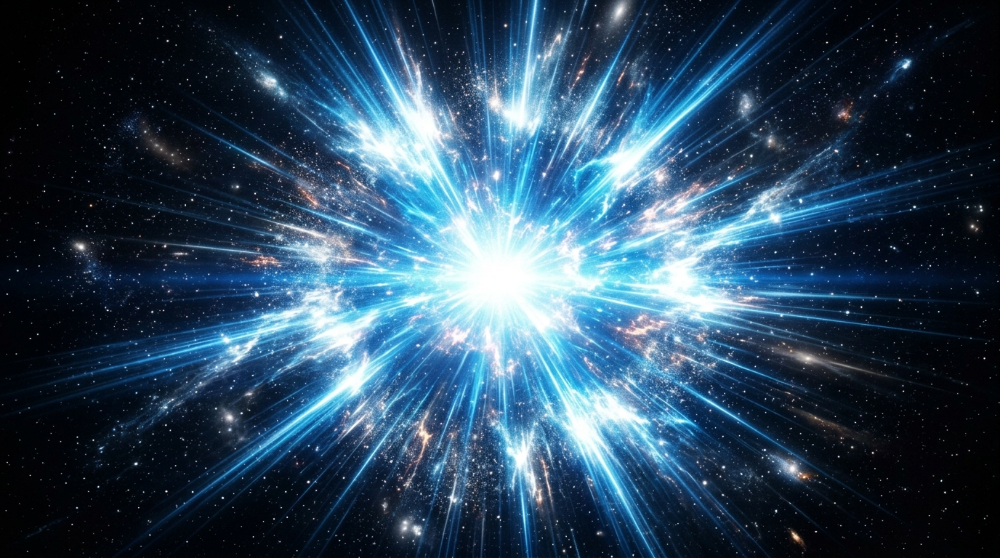
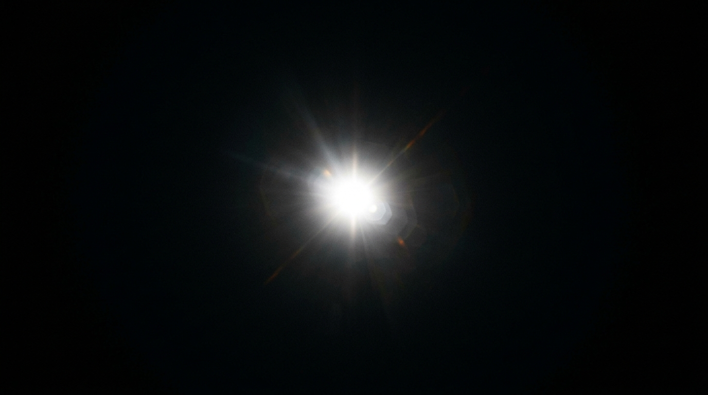

John 1:1 · Colossians 1:15 · Hebrews 1:3
Despite being invisible, untouchable, and beyond all human comprehension, God refused to remain hidden. Before the universe was formed — before light, before matter, before time itself — He arranged a way to make Himself fully known.
God, by His very nature, is spirit — invisible, untouchable, transcendent, beyond every physical boundary. No human eye has ever seen Him. No hand has reached Him. He dwells in light unapproachable; light so pure and intense that no creature can look upon Him and live.
This was always the mystery at the heart of existence: the Creator of all things, the source of all life, the foundation of all reality — utterly beyond the capacity of His own creation to perceive, to know, or to approach.
"No one has ever seen God." — John 1:18
"God is light; in him there is no darkness at all." — 1 John 1:5

The author of Hebrews gives us the most precise image in all of Scripture: the Son is "the radiance of God's glory and the exact representation of his being."
Consider light and the sun. The sun itself — the blazing core — is unapproachable. But its radiance, its light, is the very expression of what the sun is. The light and the sun are not the same thing; yet the light carries the full reality of the sun to the world. Without the light, the sun is unknowable.
So the Son is to the Father. He is not a diminished version of God. He is not a copy or a shadow. He is the living radiance — the full, exact expression of God's own being — sent out into the world so that God could finally be seen.
"The Son is the radiance of God's glory and the exact representation of his being, sustaining all things by his powerful word." — Hebrews 1:3
"Philip said to him, 'Lord, show us the Father, and it is enough for us.' Jesus said to him, 'Have I been with you so long, and you still do not know me, Philip? Whoever has seen me has seen the Father.'" — John 14:8–9
Before the first atom. Before the first photon of light. Before time had a beginning — the Word already existed. This is the staggering claim that opens the Gospel of John, echoing the very first words of Genesis.
"In the beginning" — the same phrase, the same eternal starting point. But this time, instead of "God created," we are told: "the Word was." Past tense, in a moment before all past tenses. He was not created at the beginning; He was already there, already eternal, already God.
John goes further: "Through him all things were made; without him nothing was made that has been made." This means everything that exists — every star, every galaxy, every atom of matter, every breath of life — was created by and through the Word. He is the origin of all origins.
"In the beginning was the Word, and the Word was with God, and the Word was God." — John 1:1
"He was with God in the beginning. Through him all things were made." — John 1:2–3
This is perhaps the most misunderstood title given to the Son — and Paul is deliberately provocative in his choice of it. In the ancient world, "firstborn" was not about birth order. It was a title of supreme authority, of preeminence, of the one who holds the inheritance.
Paul makes this absolutely explicit in the very next verse: "For in him all things were created... all things have been created through him and for him."
You cannot be created through someone who is himself created. The "Firstborn of all creation" is the one who stands over all creation — who existed before it, who authored it, who holds it together by His power. He is not the first item on the list. He is the one who made the list.
"He is the image of the invisible God, the firstborn of all creation. For by him all things were created... all things were created through him and for him." — Colossians 1:15–16

God is spirit — invisible. God sent the Son — His exact image, His living radiance, who existed before all things and through whom all things were made — into the world in human flesh. Not to be less than God. But so that for the first time, those with eyes to see could look upon the face of God Himself.
"The Word became flesh and made his dwelling among us. We have seen his glory, the glory of the one and only Son, who came from the Father, full of grace and truth."
— John 1:14